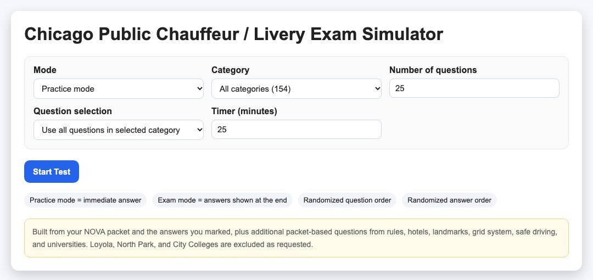

Chicago Chauffeur Exam Simulator

- Problem
- I needed to pass the Chicago Public Chauffeur exam. It covers city geography, hotels, landmarks, hospitals, rules, and safe driving.
- What I did
- With an AI assistant, I turned my study packet into a browser practice app. It has 154 questions in 8 categories, a practice mode with instant feedback, a timed exam mode, and randomized questions and answers.
- Result
- I passed the exam.